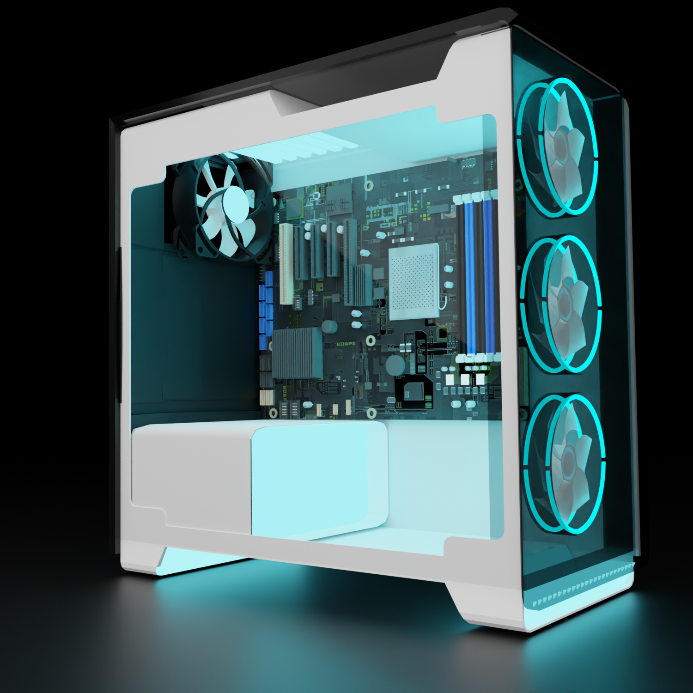

O que é um computador?
Um computador é uma máquina eletrônica projetada para processar dados de acordo com um conjunto de instruções armazenadas em sua memória. Ele executa operações lógicas e aritméticas, manipula informações e realiza tarefas variadas.
Componentes básicos de um computador:
- Unidade Central de Processamento (CPU): É o cérebro do computador, responsável por executar instruções e coordenar as operações do sistema.

- Memória RAM (Random Access Memory): Armazena temporariamente dados e instruções que estão sendo usados ativamente pelo processador.

- Disco Rígido (ou SSD): Fornece armazenamento de longo prazo para dados e programas.

- Placa-Mãe: Conecta e coordena todos os componentes do computador.

- Dispositivos de Entrada e Saída (teclado, mouse, monitor, etc.): Permitem a interação do usuário com o computador.

- Sistema Operacional: Software que gerencia os recursos do computador e fornece uma interface para interação.

- Softwares de Aplicação: Programas e aplicativos que realizam tarefas específicas, como processadores de texto, navegadores da web, jogos, entre outros.

O que é um Notebook ?
Um notebook, também conhecido como laptop, é um tipo de computador pessoal que é projetado para ser compacto e portátil. Ele combina os principais componentes de um computador, como processador, memória, armazenamento, tela, teclado e touchpad (ou trackpad), em uma única unidade compacta.
A principal característica distintiva de um notebook é sua portabilidade. Ao contrário dos computadores de mesa (desktops), que são geralmente maiores e destinados a permanecer em um local fixo, os notebooks são projetados para serem facilmente transportados e usados em qualquer lugar. Eles são frequentemente usados por estudantes, profissionais em viagem, trabalhadores remotos e qualquer pessoa que precise de acesso a um computador em movimento.
Os notebooks são alimentados por baterias internas, o que lhes permite funcionar sem a necessidade de uma conexão constante com uma fonte de energia elétrica. Eles geralmente vêm com sistemas operacionais completos, como Windows, macOS ou Linux, e podem executar uma ampla variedade de aplicativos, desde navegadores da web e suítes de escritório até software de edição de fotos e vídeos.
Os notebooks vêm em uma variedade de tamanhos, recursos e preços, desde modelos básicos e acessíveis até modelos premium com especificações avançadas e designs ultraportáteis. Eles continuam a ser uma escolha popular para aqueles que precisam de computação móvel e flexibilidade.
Componentes básicos de um Notebook:
Os componentes básicos de um notebook são semelhantes aos de um computador de mesa, mas compactados para caber em um espaço menor e geralmente integrados em uma única estrutura. Aqui estão os principais componentes de um notebook:
- Processador Para Notebook : Responsável pelo processamento de dados e execução de instruções.

- Memória RAM Para Notebook: Usada para armazenar temporariamente dados e programas em execução para acesso rápido pelo processador.

- Disco Rígido (ou SSD) Para Notebook: Armazena permanentemente dados, incluindo o sistema operacional, aplicativos e arquivos do usuário.

- Placa-mãe Para Notebook: A placa-mãe em um notebook conecta todos os componentes vitais, incluindo CPU, RAM, disco rígido/SSD, placa de vídeo integrada, etc.

- Tela (LCD ou LED) Para Notebook: A tela do notebook é onde as informações são exibidas ao usuário. Pode ser de tecnologia LCD ou LED, com diferentes resoluções e tamanhos.

- Teclado e Touchpad (ou Trackpad) Para Notebook: São os principais dispositivos de entrada do usuário em um notebook, usados para inserir texto, comandos e navegar na interface.

- Bateria Para Notebook Fonte de energia portátil que permite ao notebook ser usado sem estar conectado a uma tomada elétrica.

- Portas de Entrada/Saída (E/S) Para Notebook: Incluem portas USB, HDMI, VGA, Ethernet, entre outras, que permitem conectar dispositivos externos, como unidades de armazenamento, monitores externos, redes com fio, etc.

- Placas de Rede Wi-Fi e Bluetooth Para Notebook: Permitem a conexão sem fio à internet e a outros dispositivos compatíveis.

- Coolers e Sistema de Resfriamento Para Notebook: Para dissipar o calor gerado pelos componentes internos e manter a temperatura do notebook dentro de limites seguros.

- Alto-falantes e Microfone Integrados Para Notebook: Para saída de áudio e entrada de voz, permitindo reprodução de som e comunicação por voz.

Esses são os componentes básicos encontrados na maioria dos notebooks. Dependendo do modelo e das necessidades específicas do usuário, podem haver outros componentes ou características adicionais.
Computadores e Notebooks
Os computadores podem variar em tamanho e forma, desde dispositivos portáteis como laptops e smartphones até servidores de grande escala em data centers. Eles desempenham um papel fundamental em várias áreas da vida moderna, incluindo comunicação, educação, entretenimento, pesquisa científica, negócios e muito mais.
Alguns Exemplos Abaixo
- Desktops: São computadores pessoais tradicionais que geralmente consistem em uma torre (ou gabinete) que contém a CPU, memória, disco rígido, e uma unidade óptica. Eles são geralmente mais potentes e expansíveis do que laptops, pois têm mais espaço para componentes internos.

- Laptops (ou Notebooks): São computadores portáteis que integram CPU, memória, disco rígido e outros componentes em um único dispositivo compacto. São ideais para mobilidade e uso em movimento.

Video Aula Ensinando a Instalar o Windows 10 Link Direto do YouTube
Voltar para o Início